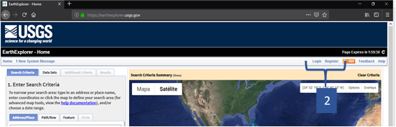
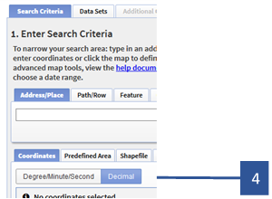
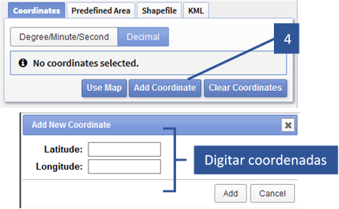
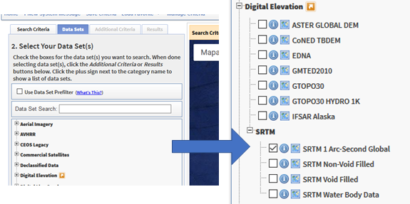
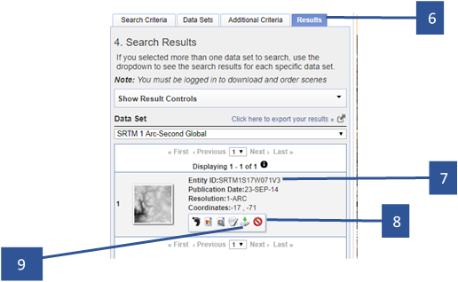

Chapter 5 Modelos Digitales de Elevación
Los modelos digitales de elevación o DEM no son otra cosa que modelos 3D de la superficie de la tierra, almacenados como un formato de cuadrícula o grilla de píxeles (Raster) donde cada celda tiene el valor de elevación promedio de su área de cobertura. Hay dos formas de modelos digitales o de elevación (DEM):
- Modelos digitales de superficie (DSM), donde cada valor de píxel es la altura promedio de todas las características de la superficie, incluidos los edificios y el dosel de vegetación. Los modelos de superficie digitales se producen comúnmente a partir de pares de imágenes de satélite estéreo, denominados pares estereoscópicos.
- Modelos digitales de terreno (DTM), donde el valor de cada píxel representa la elevación de la superficie del suelo. Estos datos son producidos comúnmente por los sistemas de imágenes RADAR.
Existe una gran variedad de fuentes de donde se puede adquirir modelos digitales de elevación (DEM) de cualquier parte del mundo, entre ellos tenemos:
- SRTM (Shuttle Radar Topographic Mission).
- ASTER (Advanced Spaceborne Thermal Emission and Reflection Radiometer).
- Alos PALSAR.
- TanDEM-X.
NOTA: En esta guía se mostrará solo 2 de estas fuentes de modelos digitales de elevación, siendo SRTM y ASTER GDEM los modelos digitales de elevación que se utilizarán.
5.1 Adquisición de Modelos Digitales de Elevación
5.1.1 SRTM mediante Earth Explorer
Para poder descargar imágenes desde esta fuente es necesario contar con usuario registrado, la cual es muy cencillo de registrar, solo basta registrarse en esta direccion: https://ers.cr.usgs.gov/register y rellenar la información que solicita.
Con el usuario registrado,deberemos seguir los siguientes pasos:
Dirigirse a su navegador y digitar la dirección web:
- Dar click en
Loginy colocar los datos (usuario y contraseña).

- Una vez colocada los datos en
Login, en el apartadoSearch Criteriahacer click endecimal.

- Posteriormente hacer click en
add coordinate, en la ventana emergente colocar las coordenadas (geográficas) en grados decimales de área de donde se quiere adquirir el archivo raster; para caso de ejemplo utilizaremos la siguiente coordenada: lat. -15.2 y long. -70.2.

- Con las coordenadas digitadas daremos click en
Data Setspara seleccionar el producto, en ese apartado desplegar la opciónDigital Elevation > SRTM, y marcar la opciónSRTM 1 ARC Second Globalpara un raster de 30 metros de resolución oSRTM Non – Void Filledpara un raster de 90 metros de resolución.

- Una vez seleccionado el producto nos dirigimos al apartado
Results. - En este apartado podremos ver todas las imágenes SRTM de 30 metros que se intersectan con nuestra ubicación de búsqueda.
- En cada imagen resultado, nos muestra unas herramientas con la cual podremos desde realizar una pre visualización hasta descargar la imagen.
- Finalmente utilizaremos la herramienta
Downloadpara descargar las imágenes que deseemos. 